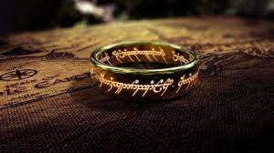

J'ai passé la grande majorité de ma scolarité dans un lycée International à Saint-Germain-En-Laye en région parisienne. J'ai réalisé deux années de classe préparatoire aux grandes écoles de commerce à Versailles. Depuis septembre 2021 je suis étudiant à Kedge BS Bordeaux.
J'adore voyager et découvrir de nouvelles choses. Je suis allé au Mexique, en Argentine, en Afrique du Sud, au Zimbabwe, en Inde, en Indonésie...


Je suis passioné de sport. Je pratique et je regarde le football et le tennis notamment. Je suis également un grand fan Formule 1. Mon joueur de tennis préféré est l'argentin Juan Martin Del Potro.
Je suis également un grand fan de cinéma. J'apprécie plutôt les films fantastiques et d'aventure. Mon film préféré est Le Seigneur des Anneaux réalisé par Peter Jackson. Le film est évidemment adapté du livre écrit par J.R.R Tolkien. Voici un bref résumé:
Prenant place dans le monde de fiction de la Terre du Milieu, l'oeuvre suit la quête du hobbit Frodon Sacquet, qui doit détruire l'Anneau unique afin que celui-ci ne tombe pas entre les mains de Sauron, le Seigneur des ténèbres. Plusieurs personnages lui viennent en aide, parmi lesquels son jardinier Sam, les hobbits Meriadoc et Peregrin, le mage Gandalf ou encore l'humain Aragorn, héritier d'une longue lignée d'illustres rois.
 Source